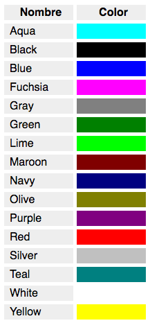

> Manual HTML
> Manual HTML 11 de octubre de 2001
> Manual HTML 11 de octubre de 2001
11 de octubre de 2001
> Manual HTML 11 de octubre de 2001
Hasta ahora todos nuestros ejemplos han sido en blanco y negro. Muy aburrido! seguro que estáis deseando dar un poco de color a las páginas, así que en este artículo vamos a comenzar con ello.
A pesar de que por razones de homogeneidad y sencillez, pero sobre todo por la necesidad de la separación del código por responsabilidades, este tipo de etiquetas para definir formatos deben de realizarse exclusivamente por medio de las hojas de estilo en cascada (de las cuales ya tendremos tiempo de hablar). Sin embargo, en HTML tradicional existe una forma clásica y directa de definir color tamaño y tipo de letra de un texto determinado.
Esto se hace a partir de la etiqueta FONT y su cierre correspondiente. Dentro de esta etiqueta deberemos especificar los atributos correspondientes a cada uno de estos parámetros que deseamos definir. A continuación os comentamos los atributos principales de esta etiqueta:
Nota: Los colores no son responsabilidad del HTML, puesto que pertenecen al estilo y no al contenido. Por lo tanto, todo lo que se va a explicar aquí está en desuso. Lo advertimos mediante esta nota y en el texto del propio artículo. Este artículo te puede venir bien como práctica, si estás comenzando con HTML y quieres jugar con etiquetas diferentes. Sin embargo, tenlo muy en cuenta, nunca uses estas etiquetas en un proyecto real, usa CSS.
Incluso en el estándar HTML5, que es el más actual, etiquetas como FONT se han eliminado, por lo que no deberían usarse.
Define el tipo de letra. Muy probablemente tu navegador no le haga caso al atributo, puesto que está totalmente en desuso.
Hay que tener cuidado con este atributo ya que cada usuario, dependiendo de la plataforma que utilice, puede no disponer de los mismos tipos de letra que nosotros con lo que, si nosotros elegimos un tipo del que no dispone, el navegador se verá forzado a mostrar el texto con la fuente que utiliza por defecto (suele ser Times New Roman). Para evitar esto, dentro del atributo suelen seleccionarse varios tipos de letra separados por comas. En este caso el navegador comprobará que dispone del primer tipo enumerado y si no es así, pasará al segundo y así sucesivamente hasta encontrar un tipo que posea o bien acabar la lista y poner la fuente por defecto. Veamos un ejemplo.
<font face="Comic Sans MS,arial,verdana">Este texto tiene otra tipografía</font>
Que se visualizaría así en una página web.
Este texto tiene otra tipografíaNota: Aquí tenemos un ejemplo de atributo cuyo valor debe estar limitado por comillas ("). Habíamos dicho que las comillas eran opcionales en los atributos, sin embargo esto no es así siempre. Si el valor del atributo contiene espacios, como es el caso de:
face="Comic Sans MS,arial,verdana"
debemos colocar las comillas para limitarlo. En caso de no tener comillas
face=Comic Sans MS,arial,verdana
se entendería que face=Comic, pero no se tendría en cuenta todo lo que sigue, porque HTML no lo asociaría al valor del atributo. En este caso HTML pensaría que las siguientes palabras (después del espacio) son otros atributos, pero como no los conoce como atributos simplemente los desestimará.
Define el tamaño de la letra. Este tamaño puede ser absoluto o relativo.
Si hablamos en términos absolutos, existen 7 niveles de tamaño distintos numerados de 1 a 7 por orden creciente. Elegiremos por tanto un valor size="1" para la letra más pequeña o size="7" para la más grande.
<font size=4>Este texto es más grande</font>
Que se visualizaría así en una página web.
Este texto es más grandePodemos asimismo modificar el tamaño de nuestra letra con respecto al del texto mostrado precedentemente definiendo el número de niveles que queremos subir o bajar en esta escala de tamaños por medio de un signo + o -. De este modo, si definimos nuestro atributo como size="+1" lo que queremos decir es que aumentamos de un nivel el tamaño de la letra. Si estabamos escribiendo previamente en 3, pasaremos automáticamente a 4.
Los tamaños reales que veremos en pantalla dependerán de la definición y del tamaño de fuente elegido por el usuario en el navegador. Este tamaño de fuente puede ser definido en el Explorer yendo al menu superior, Ver/Tamaño de la fuente. En Netscape elegiremos View/Text Size. Esta flexibilidad puede en más de una ocasión resultarnos embarazosa ya que en muchos casos desearemos que el tamaño del texto permanezca constante para que éste quepa en un determinado espacio. Veremos en su momento que esta prefijación del tamaño puede ser llevada a cabo por las hojas de estilo en cascada.
El color del texto puede ser definido mediante el atributo color. Cada color es a su vez definido por un número hexadecimal que esta compuesto a su vez de tres partes. Cada una de estas partes representa la contribución del rojo, verde y azul al color en cuestión.
Podéis entender cómo funciona esta numeración y cuáles son los colores que resultan más compatibles a partir de este artículo: Los colores y HTML.
Por otra parte, es posible definir de una manera inmediata algunos de los colores más frecuentemente usados para los que se ha creado un nombre más memotécnico:
<font color="red">Este texto está en rojo</font>
Que se visualizaría así en una página web.
Este texto está en rojoCon todo esto estamos ya en disposicion de crear un texto formateado de una forma realmente elaborada.
Pongamos pues en practica todo lo que hemos aprendido en estos capitulos haciendo un ejercicio consistente en una página que tenga las siguientes características:
Se puede ver aquí una posible resolución de este ejercicio. Sin embargo ten en cuenta que este código no se debería implementar en un sitio de cara al público, puesto que las cosas no se hacen así actualmente. Recuerda que los estilos son parcela de las CSS. Como práctica te puede venir bien y es agradable dar un poco de color a la página, con lo poco que sabemos de HTML. Pero no uses la etiqueta FONT en tus sitios web. Nosotros nunca admitiremos que somos los autores de este código. Si alguna vez te preguntan no digas que lo has visto aquí ;)
<!DOCTYPE html>
<html lang="en">
<head>
<meta charset="UTF-8">
<title>Home de la cocina para todos</title>
</head>
<body>
<font color="Olive" face="Comic Sans MS,arial">
<h1 align="center"><i>Cocina para Todos</i></h1>
<h2 align="center">La cocina tu alcance</h2>
</font>
<font face="Comic Sans MS,arial">
Descubre los platos más exquisitos, fáciles y económicos que puedas imaginar.
<br>
Dentro de este sitio podrás tener acceso a gran variedad de <b>recetas</b> de preparacion sencilla,
aprenderás como realizar <b>operaciones comunes</b> dentro de una cocina y podras plantear tus preguntas
en nuestro <b>consultorio</b> gourmet donde nuestro cocinero virtual pod
ayudarte con tus proyectos culinarios. También te será posible adquirir los <b>libros</b> gastronómicos más populares al precio més accesible...
<br>
Adéntrate en los misterios de la cocina sin quemar más cacerolas ni llamar al pizzero.
</font>
</body>
</html>
 Manual
Manual